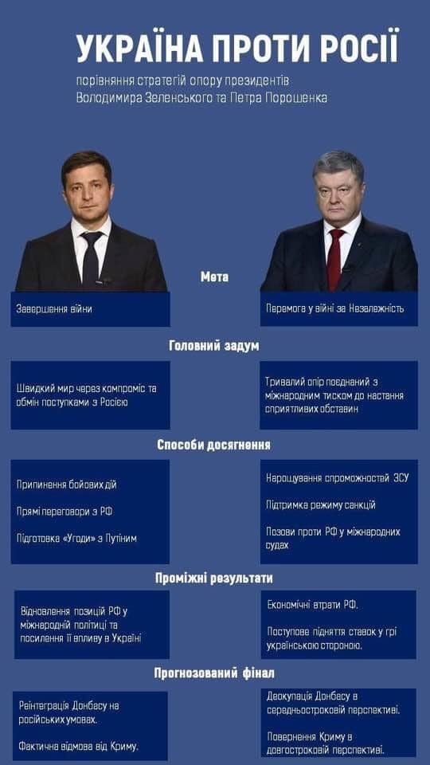

03.02.2020
Силовики тепер мають права доступу до банківської таємниці, - Нацбанк змінив процедуру »»»
Банківська таємниця - фсьо! Привіт інвесторам!
З сайту СБУ прибрали зображення козака-переможця, який вбиває двоголового змія на території Донбасу »»»
04.02.2020
"Країну про***ли": Киву "застукали" в Раді за листуванням з Жириновським »»»
UPD: Кива підтвердив, що переписувався з Жириновським у Раді »»»
У січні 2020 року Держбюджет не виконано на 21,5% »»»
Українська казна спорожніла до тривожного рівня »»»
ДБР спіймало на хабарі посадовця Кабміну »»»
Це ті нові й чесні, що не крадуть і ні разу не корупціонери!
Люстровані посадовці часів Януковича та соратники Азарова отримали високі посади за Зеленського »»»
05.02.2020
Зеленський пропонує ОПЗЖ посаду віце-прем’єра в обмін на підтримку ринку землі »»»
Зеленський заявив, що він не має часу, щоб мислити стратегічно »»»
UPD: Думати як президент: соцмережі відреагували на інтерв'ю Зеленського в Мюнхені »»»

28.02.2020
Кабмин вводит плату за абонентское обслуживание потребителям коммунальных услуг »»»